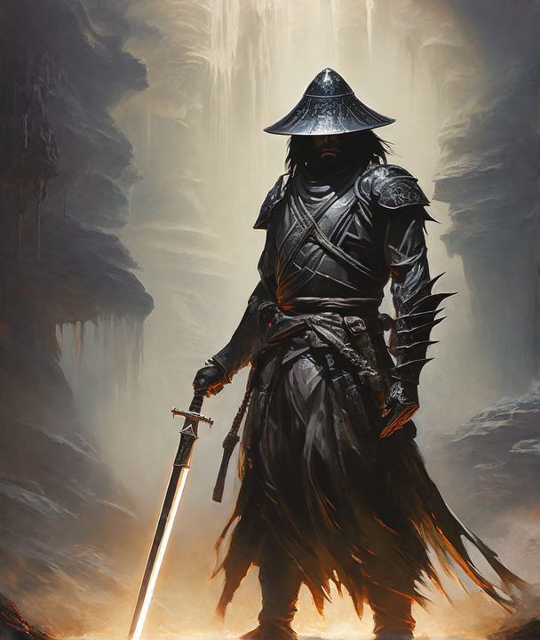
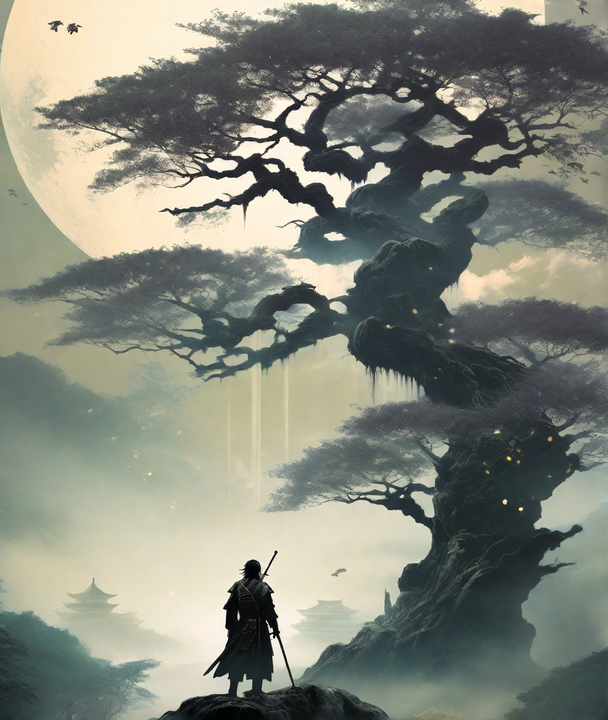

Bienvenido a las Tierras Inferiores, un reino donde aquellos tocados por el fuego primordial están destinados a enfrentar su destino. Aquí, entre los espejismos de las Tierras Estelares, un elegido se levanta para trascender su naturaleza mortal, ascendiendo en un viaje desgarrador que compromete al físico y a la mente.
Al amanecer de los tiempos, los dioses primordiales combatieron con furia por el dominio de las ramas del Árbol Visceral, cuya savia alimentaba la vida misma de los mundos. Eones de discordia concluyeron cuando un elegido, investido de un poder inaudito, emergió para forjar un nuevo orden. Fundó la Orden de Platino, un santuario de armonía que unificaba a los dioses y semidioses bajo un estandarte de paz, promoviendo un florecimiento sin precedentes en todas las ramas del Árbol Visceral. Esta era dorada se extendió por los rincones más remotos, llevando prosperidad a los confines de las Tierras Inferiores.
Pero esta paz sería efímera. Consumidos por la envidia y sed de poder, una conspiración de semidioses urdió una traición nefasta. La guerra estalló, un conflicto que consumió los cielos y desgarró la tierra, desmoronando la armonía que había sido tan arduamente conseguida. En el clímax de su desesperación, los semidioses derribaron al elegido, cuyas cenizas se dispersaron a través de los vastos territorios, dando origen a una nueva estirpe de guerreros, los Herederos de la Ceniza, destinados a buscar justicia por la caída de su creador.
Acto 2: El descenso a las sombras
Tras enfrentar incontables peligros en las Tierras Inferiores, el Heredero de la Ceniza se encuentra ante la boca de un abismo olvidado. Este oscuro reino subterráneo, entrelazado con las raíces del Árbol Visceral, es un laberinto de cavernas y ruinas antiguas.
Con cada paso en esta oscuridad insondable, el Heredero se ve acosado por sombras y espectros, remanentes de un pasado maldito. La luz de su espada es la única guía en este mundo de tinieblas. Mientras explora las profundidades, descubre reliquias y runas antiguas que revelan la verdadera historia del Árbol Visceral y su conexión con el mundo de los vivos y los muertos.
Sin embargo, el peligro se intensifica cuando seres de una era olvidada, los Guardianes Secretos, se alzan para desafiar su paso. El Heredero debe utilizar toda su habilidad y astucia para sobrevivir a estos encuentros y descifrar los enigmas que podrían ser la clave para restaurar el equilibrio en las Tierras Inferiores.

Acto 3: La Revelación del Árbol Visceral
Emergiendo de las sombras, el Heredero de la Ceniza alcanza el núcleo del Árbol Visceral conocido como "Nuclei". Este lugar sagrado, resplandeciente con una luz etérea, es el corazón de todos los mundos, donde el tiempo y el destino convergen.
Aquí, el Heredero se enfrenta a la verdad de su existencia: él es el último guardián de un ciclo ancestral, destinado a mantener el equilibrio entre la creación y la destrucción. En este momento decisivo, debe elegir entre perpetuar el ciclo o romperlo para forjar un nuevo destino para las Tierras Inferiores.
Mientras los ecos de los dioses primordiales observan, el Heredero enfrenta su último desafío. Con el poder de las cenizas de sus predecesores y la sabiduría adquirida en su viaje, toma una decisión que resuena a través de las ramas del Árbol Visceral, determinando el futuro de todos los reinos conectados a él.
